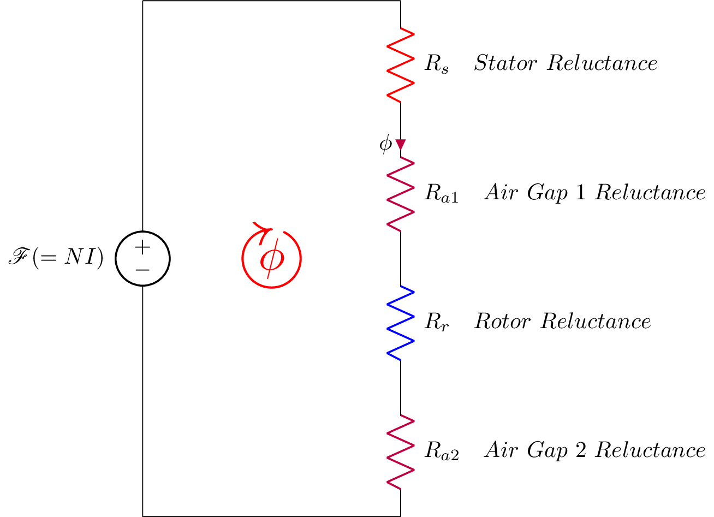

\documentclass{standalone}
\usepackage{circuitikz}
\usepackage{graphicx}
\usepackage{mathrsfs}
\usepackage{latexsym,amssymb,amsmath}
\newcommand{\equal}{=}
\begin{document}
\begin{circuitikz}[american voltages,scale =1]
\draw (0,8) to [voltage source,l_=$\mathscr{F}(\equal NI)$] (0,0) -- (4,0)
%node[anchor=south] {$v_L$}
to [R, l_= $R_{a2} \quad Air \ Gap \ 2 \ Reluctance $,color=purple] (4,2)
to [R, l_= $R_{r} \quad Rotor \ Reluctance $,color=blue] (4,4)
to [R,i^<=$\phi$, l_= $R_{a1} \quad Air \ Gap \ 1 \ Reluctance $,color=purple] (4,6)
to [R, l_= $R_{s} \quad Stator \ Reluctance $,color=red] (4,8)
(4,8) -- (0,8)
%(2,3) -- (4,3) to [L=$L$, i>^=$i_L(t)$, v=$v_L(t)$] (4,0) -- (0,0)
(2,4) node[scale=4]{$\textcolor{red}{\circlearrowright}$}
(2,4) node[scale=2]{$\textcolor{red}{\mathbf{\phi}}$};
;\end{circuitikz}
\end{document}Created by David Li